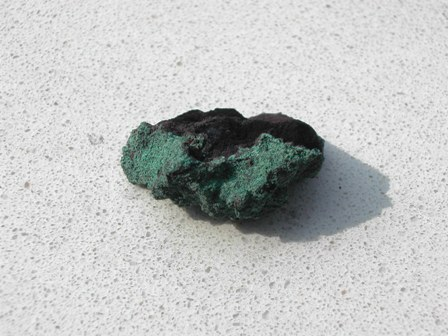
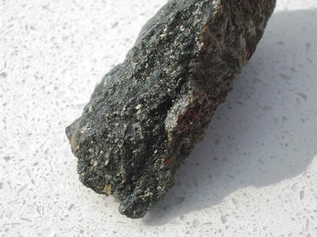

Contro l'afa che si taglia con un coltello e i trentacinque gradi delle pianure, ho avuto la fortuna di gustare per un po' il fresco degli otto (!) gradi e l'aria salutare della vecchia miniera di rame di Predoi in Val Aurina.
Dopo Monteneve (assolutamente imperdibile!) in Val Ridanna, molto interessante è anche questa antica miniera, attiva dal 1400 a fine ottocento, e addirittura con un breve periodo a cavallo di tutti gli anni '60.
Anche qesto complesso minerario è ottimamente gestito dal Museo Provinciale delle Miniere dell'Alto Adige, presso il cui sito (a questo link) si possono attingere tutte le notizie utili alla visita.
Il minerale utile prevalente a Predoi è la calcopirite CuFeS2, immersa in tenore non elevato in una dura matrice scistosa, a sua volta compresa nei graniti e gneiss delle formazioni rocciose delle Alpi Noriche.
L'avanzamento nella roccia sterile era faticosissimo e la giacitura della mineralizzazione quasi verticale ha costretto, nel tempo, all'apertura di sempre più lunghe gallerie orizzontali per raggiungere la mineralizzazione partendo da quote inferiori lungo il versante della montagna.
Il filone utile partiva inizialmente da quota 2080 e sprofondava per circa 500 metri.
Attualmente l'unica galleria visitabile è la St.Ignaz, la più lunga (circa 1000 m) e recente e che è anche l'unica ad essere stata scavata con l'ausilio della polvere nera; tutte le altre più antiche furono aperte a colpi di mazzetta, con un avanzamento di pochi metri all'anno e in condizioni di lavoro oggi semplicemente inconcepibili.
Ho trovato interessantissimo in questa miniera il singolare metodo di sfruttamento, tuttora in uso e visibile, detto di "cementazione".
Non è altro che il conosciutissimo spostamento di un sale solubile di rame per mezzo del ferro, che anche il chimico più in erba ha visto quando ha immerso il classico chiodo in una soluzione di solfato di rame:
CuSO4 + Fe → Cu + FeSO4
Il rame ossidato sotto forma di solfato si riduce a metallico ed il ferro metallico ridotto si ossida a solfato, come prescrive la relativa posizione dei due elementi nella serie elettrochimica.
Nella miniera di Predoi il sistema consiste in pratica in un lungo canaletto di legno (una cinquantina di metri) lungo il quale scorre un velo d'acqua, proveniente dalla lenta percolazione lungo le rocce mineralizzate.

L'acqua asporta una minima quantità di sali di rame, ossidati a solfato e quindi sotto forma solubile; naturalmente la quantità di ioni Cu++ è davvero minima.
Sul fondo del canaletto sono posti senza soluzione di continuità dei dischi di ferro, che pian piano arrossicono ricoprendosi di un velo di polvere di rame: il metallo si autoestrae da solo, praticamente a costo zero!
Una volta alla settimana un ormai vecchio ex minatore asporta con una spatola il "precipitato" e lo pone ad asciugare in alcuni barili: rame quasi già bello e pronto, al 70%!
E' dal 1500 che a Predoi si fa questo semplice giochetto.
Dove stà il rovescio della medaglia? Che la produzione è di un paio di tonnellate di metallo... ma all'anno!
(Tanto per dire, nella super-maxi-big miniera di Chuquicamata in Cile questa quantità la si estrae in un minuto).
Poco più di una curiosità quindi, ma come dicevo è un particolare assai interessante di questo vecchio sito minerario, che anche se non rende più come rame continua a rendere come museo e addirittura come luogo di cura (ved.), un chilometro nel cuore della montagna.
[Ancora una volta, onore all'impegno e all'organizzazione altoatesina della cosa pubblica... in Itaglia basterebbe copiare... ma non dico altro].
Anche se le fotografie non rendono la realtà degli oggetti, ecco un piccolo frammento secco di questo "rame di cementazione" ed un campione di roccia mineralizzata nella quale si notano gli scarsi granelli di calcopirite.


Tempo permettendo, su questi campioni mi divertirò magari a fare qualche semplice saggio analitico.